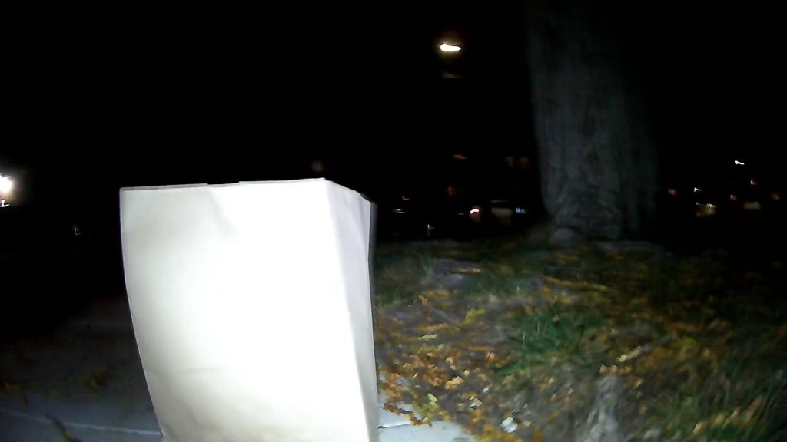
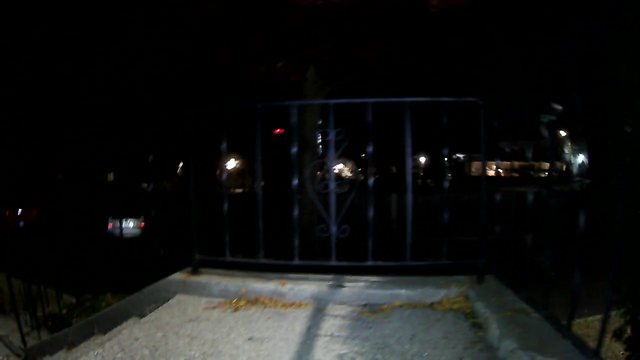

BenBen · Meta hackathon · Nov 4, 2026
BenBen keeps the map true.
Routing apps are only as good as their map. A robot dog inspects the route, Meta's models judge it, and nothing is called clear until it's seen clear.
01The question

BenBen camera · still 0107:27:06 PM ET
Can a wheelchair user get from home to the Uber pickup tonight?
02The inspection

4 min
night run, human-driven
3,396
video frames
2,355
LiDAR clouds
03The finding, kept on the twin
3Paper bag on the footpathstill 048

SAM 3.1 · paper bag · 0.86
Flag for service7:27:46 PM ET
“A large white paper bag is sitting on the path in the torch light.”
Muse says it affects
Virtual twinschematic · anchors placed by hand
FLAGGED 7:27:46
TOO DARK 7:27:19

NEEDS ANOTHER LOOK
STAYS OPEN
A dark view can't close it.
One run, left to right
ran Nov 4
wired, tested offline
roadmap
01
Ask
a route question
02
Drive
human today
03
Sense
camera · LiDAR · pose
04
Perceive
SAM 3.1 boxes
05
Decide · Muse Spark
RerouteFlag for serviceReport an issueNeeds a human
06
Review
a person confirms
07
Update twin
finding + evidence
08
Revisit
until verified